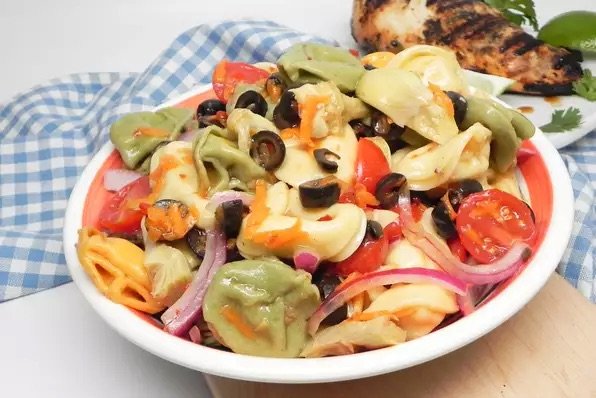

Tortellini Salad

A blend of spinach and three-cheese tortellini and marinated artichoke hearts. A perfect summer side dish or main dish! Try my Lite Italian Salad Dressing recipe with this salad!
Ingredients
- 1 (8 ounce) package dried spinach tortellini
- 1 (8 ounce) package dried three-cheese tortellini
- 1 cup grape tomatoes, halved
- 1 (6 ounce) jar marinated artichoke hearts, drained and chopped
- 1 (6 ounce) can sliced black olives, drained
- ½ red onion, thinly sliced
- ¼ cup grated carrots
- 1½ cups oil and vinegar dressing
- Fill a large pot with lightly salted water and bring to a rolling boil. Stir in spinach and three-cheese tortellini and return to a boil. Cook the pasta uncovered, stirring occasionally, until the pasta has cooked through but is still slightly firm, 10 to 11 minutes.
- Drain well, and allow tortellini to cool.
- Toss together the tortellini, grape tomatoes, artichoke hearts, olives, red onion, carrots, and dressing in a large bowl.
- Cover and refrigerate until chilled, at least 3 hours or overnight.
Homepage